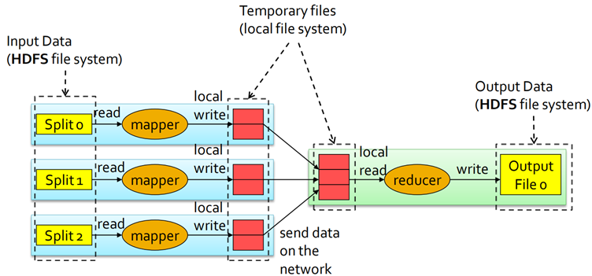
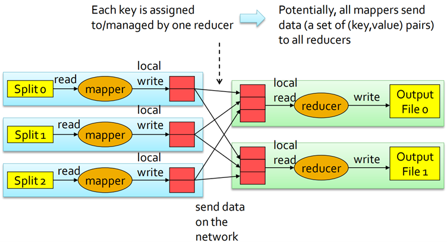
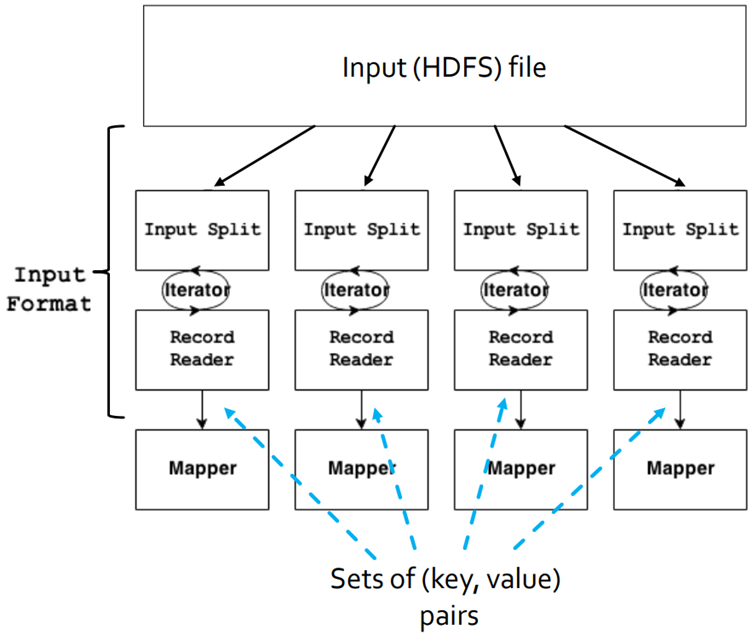
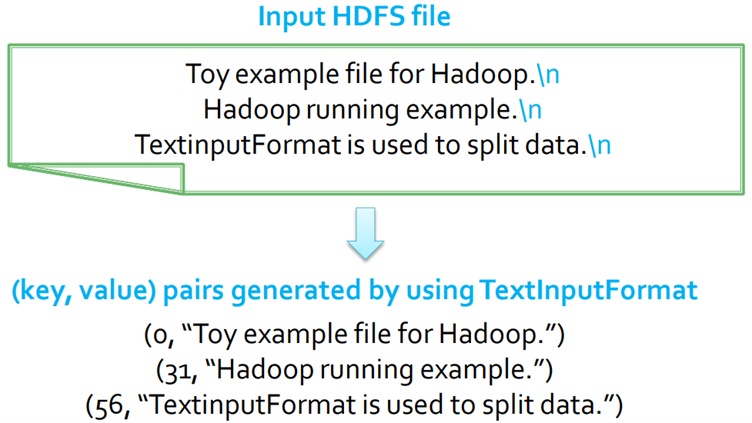
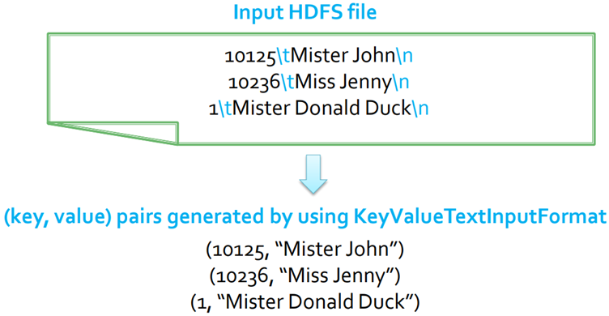
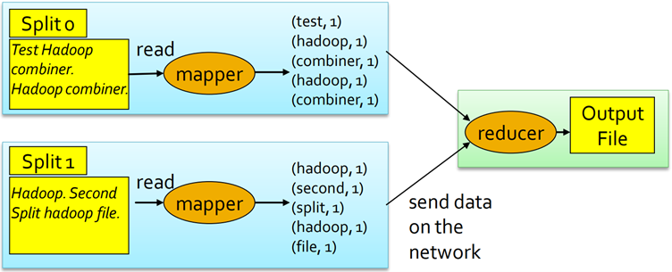
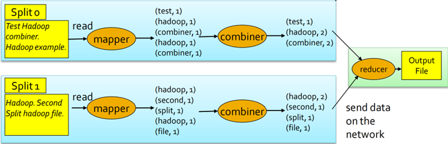

6 How to write MapReduce programs in Hadoop
Designers and developers focus on the definition of the Map and Reduce functions (i.e., \(m\) and \(r\)), and they don’t need to manage the distributed execution of the map, shuffle and sort, and reduce phases. Indeed, the Hadoop framework coordinates the execution of the MapReduce program, managing:
- the parallel execution of the map and reduce phases
- the execution of the shuffle and sort phase
- the scheduling of the subtasks
- the synchronization
The components: summary
The programming language to use to give instructions to Hadoop is Java. A Hadoop MapReduce program consists of three main parts:
- Driver
- Mapper
- Reducer
Each part is “implemented” by means of a specific class.
| Term | Definition |
|---|---|
| Driver class | The class containing the method/code that coordinates the configuration of the job and the “workflow” of the application |
| Mapper class | A class “implementing” the map function |
| Reducer class | A class “implementing” the reduce function |
| Driver | Instance of the Driver class (i.e., an object) |
| Mapper | Instance of the Mapper class (i.e., an object) |
| Reducer | Instance of the Reducer class (i.e., an object) |
| (Hadoop) Job | Execution/run of a MapReduce code over a data set |
| Task | Execution/run of a Mapper (Map task) or a Reducer (Reduce task) on a slice of data. Notice that there may be many tasks for each job |
| Input split | Fixed-size piece of the input data. Usually each split has approximately the same size of a HDFS block/chunk |
Driver (instance)
The Driver is characterized by the main() method, which accepts arguments from the command line (i.e., it is the entry point of the application). Also, it has a run() method
- It configures the job
- It submits the job to the Hadoop Cluster
- It “coordinates” the work flow of the application
- It runs on the client machine (i.e., it does not run on the cluster)
Mapper (instance)
The Mapper is an instance of the Mapper class.
- It “implements” the map phase;
- It is characterized by the
map()method, which processes the(key, value)pairs of the input file and emits(key, value)pairs and is invoked one time for each input(key, value)pair; - It runs on the cluster.
The Driver will try to create one Mapper instance for each input block, pushing to the maximum parallelization possible.
Reducer (instance)
The Reducer is an instance of the Reduce class.
- It “implements” the reduce phase;
- It is characterized by the
reduce()method, which processes(key, [list of values])pairs and emits(key, value)pairs and is invoked one time for each distinct key; - It runs on the cluster.
Hadoop implementation of the MapReduce phases
The main characteristics Hadoop implementation of the MapReduce are the following
- The input
key-valuepairs are read from the HDFS file system. - The map method of the Mapper is invoked over each input
key-valuepair, and emits a set of intermediatekey-valuepairs that are stored in the local file system of the computing server (they are not stored in HDFS). - The intermediate results are aggregated by means of a shuffle and sort procedure, and a set of
(key, [list of values])pairs is generated. Notice that one(key, [list of values])for each distinct key. - The reduce method of the Reducer is applied over each
(key, [list of values])pair, and emits a set ofkey-valuepairs that are stored in HDFS (the final result of the MapReduce application). - Intermediate
key-valuepairs are transient, which means that they are not stored on the distributed files system, while they are stored locally to the node producing or processing them. - In order to parallelize the work/the job, Hadoop executes a set of tasks in parallel
- It instantiates one Mapper (Task) for each input split
- It instantiates a user-specified number of Reducers: each reducer is associated with a set of keys, and it receives and processes all the key-value pairs associated with its set of keys
- Mappers and Reducers are executed on the nodes/servers of the clusters


Driver class
The Driver class extends the org.apache.hadoop.conf.Configured class and implements the org.apache.hadoop.util.Tool interface 1.
It is possible to write a Driver class that does not extend Configured and does not implement Tool, however some low level details related to some command line parameters must be managed in that case.
The designer/developer implements the main() and run() methods.
The run() method configures the job, defining
- The name of the Job
- The job Input format
- The job Output format
- The Mapper class
- Name of the class
- Type of its input
(key, value)pairs - Type of its output
(key, value)pairs
- The Reducer class
- Name of the class
- Type of its input
(key, value)pairs - Type of its output
(key, value)pairs
- The Number of Reducers2
Mapper class
The Mapper class extends the
class which is a generic type/generic class with four type parameters:
- input key type
- input value type
- output key type
- output value type
The designer/developer implements the map() method, that is automatically called by the framework for each (key, value) pair of the input file.
The map() method
- Processes its input
(key, value)pairs by using standard Java code - Emits
(key, value)pairs by using thecontext.write(key, value)method
Reducer class
The Reducer class extends the
class, which is a generic type/generic class with four type parameters:
- input key type
- input value type
- output key type
- output value type
The designer/developer implements the reduce() method, that is automatically called by the framework for each (key, [list of values]) pair obtained by aggregating the output of the mapper(s).
The reduce() method
- Processes its input
(key, [list of values])pairs by using standard Java code - Emits
(key, value)pairs by using thecontext.write(key, value)method
Data Types
Hadoop has its own basic data types optimized for network serialization
org.apache.hadoop.io.Text: like Java Stringorg.apache.hadoop.io.IntWritable: like Java Integerorg.apache.hadoop.io.LongWritable: like Java Longorg.apache.hadoop.io.FloatWritable: like Java Float- …
The basic Hadoop data types implement the org.apache.hadoop.io.Writable and org.apache.hadoop.io.WritableComparable interfaces
- All classes (data types) used to represent keys are instances of
WritableComparable: keys must be “comparable” for supporting the sort and shuffle phase - All classes (data types) used to represent values are instances of
Writable: usually, they are also instances ofWritableComparableeven if it is not indispensable
Developers can define new data types by implementing the org.apache.hadoop.io.Writable and/or org.apache.hadoop.io.WritableComparable interfaces, allowing to manage complex data types.
Input: InputFormat
The input of the MapReduce program is an HDFS file (or an HDFS folder), but the input of the Mapper is a set of (key, value) pairs.
The classes extending the org.apache.hadoop.mapreduce.InputFormat abstract class are used to read the input data and “logically transform” the input HDFS file in a set of (key, value) pairs.
InputFormat describes the input-format specification for a MapReduce application and processes the input file(s). The InputFormat class is used to
- Read input data and validate the compliance of the input file with the expected input-format
- Split the input file(s) into logical Input Splits, each of which is then assigned to an individual Mapper
- Provide the
RecordReaderimplementation to be used to divide the logical input split in a set of(key,value)pairs (also called records) for the mapper

InputFormat identifies partitions of the data that form an input split
- Each input split is a (reference to a) part of the input file processed by a single mapper
- Each split is divided into records, and the mapper processes one record (i.e., a
(key,value)pair) at a time
A set of predefined classes extending the InputFormat abstract class are available for standard input file formats
TextInputFormat:InputFormatfor plain text filesKeyValueTextInputFormat: anotherInputFormatfor plain text filesSequenceFileInputFormat: anInputFormatfor sequential/binary files- …
TextInputFormat
TextInputFormat is an InputFormat for plain text files. Files are broken into lines, where either linefeed or carriage-return are used to signal end of line. One pair (key, value) is emitted for each line of the file:
- Key is the position (offset) of the line in the file
- Value is the content of the line

KeyValueTextInputFormat
KeyValueTextInputFormat is an InputFormat for plain text files, where each line must have the format
and the default separator is tab (\t).
Files are broken into lines, and either linefeed or carriage-return are used to signal end of line, and each line is split into key and value parts by considering the separator symbol/character.
One pair (key, value) is emitted for each line of the file
- Key is the text preceding the separator
- Value is the text following the separator

Output: OutputFormat
The classes extending the org.apache.hadoop.mapreduce.OutputFormat abstract class are used to write the output of the MapReduce program in HDFS.
A set of predefined classes extending the OutputFormat abstract class are available for standard output file formats
TextOutputFormat: anOutputFormatforplain text filesSequenceFileOutputFormat: anOutputFormatforsequential/binary files- …
TextOutputFormat
TextOutputFormat is an OutputFormat for plain text files: for each output (key, value) pair, TextOutputFormat writes one line in the output file. In particular, the format of each output line is
Structure of a MapReduce program in Hadoop
Always start from these templates. The parts of the code that should be changed to customize the Hadoop application are highlighted using notes.
Driver
* Set package */
package it.polito.bigdata.hadoop.mypackage;
/* Import libraries */
import java.io.IOException;
import org.apache.hadoop.mapreduce.Job;
import org.apache.hadoop.util.Tool;
import org.apache.hadoop.util.ToolRunner;
import org.apache.hadoop.conf.Configuration;
import org.apache.hadoop.conf.Configured;
import org.apache.hadoop.io.*;
import org.apache.hadoop.mapreduce.lib.input.TextInputFormat;
import org.apache.hadoop.mapreduce.lib.output.TextOutputFormat;
/* Driver class */
public class MapReduceAppDriver extends Configured implements Tool {
@Override
public int run(String[] args) throws Exception {
/* variables */
int exitCode;
//...
// Parse parameters
numberOfReducers = Integer.parseInt(args[0]); // Number of instances of the Reducer class
inputPath = new Path(args[1]); // Can be the path to a folder or to a file. If this is a folder path, the application will read all the files in it
outputDir = new Path(args[2]); // This is always the path to a folder
// **********************
// JOB
// **********************
// Define and configure a new job
Configuration conf = this.getConf(); // Create a configuration object to design in it the application configuration
Job job = Job.getInstance(conf); // Creation of the job, that is the application instance
// Assign a name to the job
job.setJobName("My First MapReduce program");
// Set path of the input file/folder (if it is a folder, the job reads all the files in the specified folder) for this job
FileInputFormat.addInputPath(job, inputPath);
// Set path of the output folder for this job
FileOutputFormat.setOutputPath(job, outputDir);
// Set input format
// TextInputFormat = textual files; the input types are (keys: LongWritable, values: text)
// KeyValueTextInputFormat = textual files; the input types are (keys: text, values: text)
job.setInputFormatClass(TextInputFormat.class); // This class also includes the information about the type of input data
// Set job output format
job.setOutputFormatClass(TextOutputFormat.class);
// **********************
// DRIVER
// **********************
// Specify the class of the Driver for this job
job.setJarByClass(MapReduceAppDriver.class);
// **********************
// MAPPER
// **********************
// Set mapper class
job.setMapperClass(MyMapperClass.class);
// Set map output key and value classes; these are also the key - value types of the reduces class
job.setMapOutputKeyClass(output key type.class); // where type changes depending on the type (e.g., text, IntWritable)
job.setMapOutputValueClass(output value type.class);
// **********************
// REDUCER
// **********************
// Set reduce class
job.setReducerClass(MyReducerClass.class);
// Set reduce output key and value classes
job.setOutputKeyClass(output key type.class);
job.setOutputValueClass(output value type.class);
// Set number of reducers
job.setNumReduceTasks(numberOfReducers);
// **********************
// OTHER
// **********************
// Execute the job and wait for completion
if (job.waitForCompletion(true)==true) // with this method the application is run
exitCode=0;
else
exitCode=1;
return exitCode;
} // End of the run method
/* main method of the driver class */
public static void main(String args[]) throws Exception { // This part of the code is always the same
/* Exploit the ToolRunner class to "configure" and run the Hadoop application */
int res = ToolRunner.run(
new Configuration(),
new MapReduceAppDriver(),
args
);
System.exit(res);
} // End of the main method
} // End of public class MapReduceAppDriver- 1
-
mypackage - 2
-
MapReduceAppDriver - 3
-
"My First MapReduce program" - 4
-
TextInputFormat - 5
-
TextInputFormat - 6
-
MapReduceAppDriver - 7
-
MyMapperClass - 8
-
output value type - 9
-
output value type - 10
-
MyReducerClass - 11
-
output value type - 12
-
output value type - 13
-
MapReduceAppDriver
Mapper
/* Set package */
package it.polito.bigdata.hadoop.mypackage;
/* Import libraries */
import java.io.IOException;
import org.apache.hadoop.mapreduce.Mapper;
import org.apache.hadoop.io.*;
/* Mapper Class */
class myMapperClass extends Mapper< // Mapper is a template
MapperInputKeyType, // Input key type (must be consistent with the InputFormat class specified in the Driver)
MapperInputValueType, // Input value type (must be consistent with the InputFormat class specified in the Driver)
MapperOutputKeyType, // Output key type
MapperOutputValueType // Output value type
>{
/* Implementation of the map method */
protected void map(
MapperInputKeyType key, // Input key
MapperInputValueType value, // Input value
Context context // This is an object containing the write method, that has to be invoked to return the (key, value) pairs
) throws IOException, InterruptedException {
/*
Process the input (key, value) pair and emit a set of (key,value) pairs.
context.write(...) is used to emit (key, value) pairs context.write(new outputkey, new outputvalue);
*/
context.write(new outputkey, new outputvalue);
// Notice context.write(...) has to be invoked a number of times equal to the number of (key, value) pairs have to be returned. Even 0 times is accepted
// In the mapper instance also setup and cleanup methods can be implemented, but are not mandatory. Instead, the map method is mandatory
} // End of the map method
} // End of class myMapperClass- 1
-
mypackage - 2
-
myMapperClass - 3
-
MapperInputKeyType - 4
-
MapperInputValueType - 5
-
MapperOutputKeyType - 6
-
MapperOutputValueType - 7
-
MapperInputKeyType - 8
-
MapperInputValueType - 9
-
outputkeyandoutputvalue
Reducer
/* Set package */
package it.polito.bigdata.hadoop.mypackage;
/* Import libraries */
import java.io.IOException;
import org.apache.hadoop.mapreduce.Reducer;
import org.apache.hadoop.io.*;
/* Reducer Class */
class myReducerClass extends Reducer< // Reducer is a template
ReducerInputKeyType, // Input key type (must be consistent with the OutputKeyType of the Mapper)
ReducerInputValueType, // Input value type (must be consistent with the OutputValueType of the Mapper)
ReducerOutputKeyType, // Output key type (must be consistent with the OutputFormat class specified in the Driver)
ReducerOutputValueType // Output value type (must be consistent with the OutputFormat class specified in the Driver)
>{
/* Implementation of the reduce method */
protected void reduce(
ReducerInputKeyType key, // Input key
Iterable<ReducerInputValueType> values, // Input values (list of values). Notice that since this is an Iterable it is not possible to iterate over it more than once (it works like a Python generator). This is done because the iterable can read directly the list from the file system without moving and storing the data on the local server
Context context
) throws IOException, InterruptedException {
/*
Process the input (key, [list of values]) pair and emit a set of (key,value) pairs.
context.write(...) is used to emit (key, value) pairs context.write(new outputkey, new outputvalue);
*/
context.write(new outputkey, new outputvalue);
// Notice context.write(...) has to be invoked a number of times equal to the number of (key, value) pairs have to be returned. Even 0 times is accepted
// "new" has to be always specified
} // End of the reduce method
} // End of class myReducerClass- 1
-
mypackage - 2
-
myReducerClass - 3
-
ReducerInputKeyType - 4
-
ReducerInputValueType - 5
-
ReducerOutputKeyType - 6
-
ReducerOutputValueType - 7
-
ReducerInputKeyType - 8
-
ReducerInputValueType - 9
-
outputkeyandoutputvalue
Example of a MapReduce program in Hadoop: Word Count
The Word count problem consists of
- Input: (unstructured) textual file, where each line of the input file can contains a set of words
- Output: number of occurrences of each word appearing in the input file
- Parameters/arguments of the application:
args[0]: number of instances of the reducerargs[1]: path of the input fileargs[2]: path of the output folder
Input file
Toy example file for Hadoop. Hadoop running example.Output file
(toy,1)
(example,2)
(file,1)
(for,1)
(hadoop,2)
(running,1)Driver
/* Set package */
package it.polito.bigdata.hadoop.wordcount;
/* Import libraries */
import org.apache.hadoop.conf.Configuration;
import org.apache.hadoop.conf.Configured;
import org.apache.hadoop.fs.Path;
import org.apache.hadoop.io.IntWritable;
import org.apache.hadoop.io.Text;
import org.apache.hadoop.mapreduce.Job;
import org.apache.hadoop.mapreduce.lib.input.FileInputFormat;
import org.apache.hadoop.mapreduce.lib.input.TextInputFormat;
import org.apache.hadoop.mapreduce.lib.output.FileOutputFormat;
import org.apache.hadoop.mapreduce.lib.output.TextOutputFormat;
import org.apache.hadoop.util.Tool;
import org.apache.hadoop.util.ToolRunner;
/* Driver class */
public class WordCount extends Configured implements Tool {
@Override
public intrun(String[] args) throws Exception {
Path inputPath;
Path outputDir;
int numberOfReducers;
int exitCode;
// Parse input parameters
numberOfReducers = Integer.parseInt(args[0]);
inputPath = new Path(args[1]);
outputDir = new Path(args[2]);
// Define and configure a new job
Configuration conf = this.getConf();
Job job = Job.getInstance(conf);
// Assign a name to the job
job.setJobName("WordCounter");
// Set path of the input file/folder (if it is a folder, the job reads all the files in the specified folder) for this job
FileInputFormat.addInputPath(job, inputPath);
// Set path of the output folder for this job
FileOutputFormat.setOutputPath(job, outputDir);
// Set input format
// TextInputFormat = textual files
job.setInputFormatClass(TextInputFormat.class);
// Set job output format
job.setOutputFormatClass(TextOutputFormat.class);
// Specify the class of the Driver for this job
job.setJarByClass(WordCount.class);
// Set mapper class
job.setMapperClass(WordCountMapper.class);
// Set map output key and value classes
job.setMapOutputKeyClass(Text.class);
job.setMapOutputValueClass(IntWritable.class);
// Set reduce class
job.setReducerClass(WordCountReducer.class);
// Set reduce output key and value classes
job.setOutputKeyClass(Text.class);
job.setOutputValueClass(IntWritable.class);
// Set number of reducers
job.setNumReduceTasks(numberOfReducers);
// Execute the job and wait for completion
if (job.waitForCompletion(true)==true)
exitCode=0;
else
exitCode=1;
return exitCode;
} // End of the run method
/* main method of the driver class */
public static void main(String args[]) throws Exception {
/* Exploit the ToolRunner class to "configure" and run the
Hadoop application */
intres = ToolRunner.run(
new Configuration(),
new WordCount(),
args
);
System.exit(res);
} // End of the main method
} // End of public class WordCountMapper
/* Set package */
package it.polito.bigdata.hadoop.wordcount;
/* Import libraries */
import java.io.IOException;
import org.apache.hadoop.io.IntWritable;
import org.apache.hadoop.io.LongWritable;
import org.apache.hadoop.io.Text;
import org.apache.hadoop.mapreduce.Mapper;
/* MapperClass */
class WordCountMapper extends Mapper<
LongWritable, // Input key type
Text, // Input value type
Text, // Output key type
IntWritable // Output value type
>{
/* Implementation of the map method */
protected void map(
LongWritable key, // Input key type
Text value, // Input value type
Context context
) throws IOException, InterruptedException {
// Split each sentence in words. Use whitespace(s) as delimiter
// The split method returns an array of strings
String[] words = value.toString().split("\\s+");
// Iterate over the set of words
for(String word : words) {
// Transform word case
String cleanedWord = word.toLowerCase();
// emit one pair (word, 1) for each input word
context.write(new Text(cleanedWord), new IntWritable(1));
}
} // End map method
} // End of class WordCountMapperReducer
/* Set package */
package it.polito.bigdata.hadoop.wordcount;
/* Import libraries */
import java.io.IOException;
import org.apache.hadoop.io.IntWritable;
import org.apache.hadoop.io.Text;
import org.apache.hadoop.mapreduce.Reducer;
/* Reducer Class */
class WordCountReducer extends Reducer<
Text, // Input key type
IntWritable, // Input value type
Text, // Output key type
IntWritable // Output value type
>{
/* Implementation of the reduce method */
protected void reduce(
Text key, // Input key type
Iterable<IntWritable> values, // Input value type
Context context
) throws IOException, InterruptedException{
int occurrances= 0;
// Iterate over the set of values and sum them
for (IntWritable value : values) {
occurrances = occurrances+ value.get();
}
// Emit the total number of occurrences of the current word
context.write(key, new IntWritable(occurrances));
} // End reduce method
} // End of class WordCountReducerCombiner
In standard MapReduce applications, the (key,value) pairs emitted by the Mappers are sent to the Reducers through the network. However, some pre-aggregations could be performed to limit the amount of network data by using Combiners (also called “minireducers”).
Consider the standard word count problem, and suppose that the input file is split in two input splits, hence, two Mappers are instantiated (one for each split).

A combiner can be locally called on the output (key, value) pairs of each mapper (it works on data stored in the main-memory or on the local hard disks) to pre-aggregate data, reducing the data moving through the network.

So, in MapReduce applications that include Combiners after the Mappers, the (key,value) pairs emitted by the Mappers are analyzed in main-memory (or on the local disk) and aggregated by the Combiners. Each Combiner pre-aggregates the values associated with the pairs emitted by the Mappers of a cluster node, limiting the amount of network data generated by each cluster node.
- Combiners work only if the reduce function is commutative and associative.
- The execution of combiners is not guaranteed: Hadoop decides at runtime if executing a combiner, and so the user cannot be sure of the combiner execution just by checking the code. Because of this, the developer/designer should write MapReduce jobs whose successful executions do not depend on whether the Combiner is executed.
Combiner (instance)
The Combiner is an instance of the org.apache.hadoop.mapreduce.Reducer class. Notice that there is not a specific combiner-template class.
- It “implements” a pre-reduce phase that aggregates the pairs emitted in each node by Mappers
- It is characterized by the
reduce()method - It processes
(key, [list of values])pairs and emits(key, value)pairs - It runs on the cluster
Combiner class
The Combiner class extends the org.apache.hadoop.mapreduce.Reducer class, that is a generic type/generic class with four type parameters:
- input key type
- input value type
- output key type
- output value type
Notice that the output data types are the same as the output data types.
Combiners and Reducers extend the same class, and the designer/developer implements the reduce() method also for the Combiner instances. The Combiner is automatically called by Hadoop for each (key, [list of values]) pair obtained by aggregating the local output of a Mapper.
The Combiner class is specified by using the job.setCombinerClass() method in the run method of the Driver (i.e., in the job configuration part of the code).
Example: adding the Combiner to the Word Count problem
Consider the word count problem (see Section 6.0.3.4 for details), to add the combiner to solution seen before:
- Specify the combiner class in the Driver
- Define the Combiner class. The reduce method of the combiner aggregates local pairs emitted by the mappers of a single cluster node, and emits partial results (local number of occurrences for each word) from each cluster node that is used to run the application.
Specify combiner class in the Driver
Add the call to the combiner class in the Driver, before the return around line 68
Define the Combiner class
/* Set package */
package it.polito.bigdata.hadoop.wordcount;
/* Import libraries */
import java.io.IOException;
import org.apache.hadoop.io.IntWritable;
import org.apache.hadoop.io.Text;
import org.apache.hadoop.mapreduce.Reducer;
/* Combiner Class */
class WordCountCombiner extends Reducer<
Text, // Input key type
IntWritable, // Input value type
Text, // Output key type
IntWritable // Output value type
>{
/* Implementation of the reduce method */
protected void reduce(
Text key, // Input key type
Iterable<IntWritable> values, // Input value type
Context context
) throws IOException, InterruptedException{
int occurrances= 0;
// Iterate over the set of values and sum them
for (IntWritable value : values) {
occurrances = occurrances+ value.get();
}
// Emit the total number of occurrences of the current word
context.write(key, new IntWritable(occurrances));
} // End reduce method
} // End of class WordCountCombinerFinal thoughts
The reducer and the combiner classes perform the same computation (the reduce method of the two classes is the same). Indeed, the developer/designer does not really need two different classes: he can simply specify that WordCountReducer is also the combiner class, for example by adding in the driver
// Set combiner class
job.setCombinerClass(WordCountReducer.class);
// "WordCountReducer.class" instead of "WordCountCombiner.class"In 99% of the Hadoop applications the same class can be used to implement both combiner and reducer.
Personalized Data Types
Personalized Data Types are useful when the value of a key-value pair is a complex data type. Personalized Data Types are defined by implementing the org.apache.hadoop.io.Writable interface. To properly serialize the input-output data, the following methods must be implemented
public void readFields(DataInput in)public void write(DataOutput out)
To properly format the output of the job (i.e., the output of the reducer) usually also the following method is “redefined”
public String toString()
If also a constructor is defined, remember to define also an empty constructor, otherwise the system will raise an error at runtime.
Example
Suppose to be interested in complex values composed of two parts, such as a counter (int) and a sum (float). In this case, an ad-hoc Data Type can be used to implement this complex data type in Hadoop.
/* Set package */
package it.polito.bigdata.hadoop.combinerexample;
import java.io.DataInput;
import java.io.DataOutput;
import java.io.IOException;
public class SumAndCountWritable implements
org.apache.hadoop.io.Writable {
/* Private variables */
private float sum = 0;
private int count = 0;
/* Methods to get and set private variables of the class */
public float getSum() {
return sum;
}
public void setSum(float sumValue) {
sum=sumValue;
}
public int getCount() {
return count;
}
public void setCount(int countValue) {
count=countValue;
}
/* Methods to serialize and deserialize the contents of the
instances of this class */
@Override /* Serialize the fields of this object to out */
public void write(DataOutput out) throws IOException {
out.writeFloat(sum);
out.writeInt(count);
}
@Override /* Deserialize the fields of this object from in */
public void readFields(DataInput in) throws IOException {
um=in.readFloat();
count=in.readInt();
}
/* Specify how to convert the contents of the instances of this
class to a String
* Useful to specify how to store/write the content of this class
* in a textual file */
public String toString()
{
String formattedString=
new String("sum="+sum+",count="+count);
return formattedString;
}
}- 1
- Notice that the order of the read must be coherent with the order of the write.
Complex keys
Personalized Data Types can be used also to manage complex keys. In that case the Personalized Data Type must implement the org.apache.hadoop.io.WritableComparable interface, since keys must be
- Compared/sorted: it is possible by implementing the
compareTo()method; it is used by the Combiner locally.
- Split in groups: it is possible by implementing the
hashCode()method; it is used by the Reducer on the networks.
Counters
Hadoop provides a set of basic, built-in, counters to store some statistics about jobs, mappers, reducers, for example
- number of input and output records (i.e., pairs)
- number of transmitted bytes
Also other ad-hoc, user-defined, counters can be defined to compute global “statistics” associated with the goal of the application.
User-defined counters
User-defined counters are defined by means of Java enum, and each application can define an arbitrary number of enums. The name of the enum is the group name, and each enum has a number of “fields”, which are the counter names.
Counters are incremented in the Mappers and Reducers by using the increment() method
The global/final value of each counter, which is available at the end of the job, is then stored/printed by the Driver (at the end of the execution of the job). Driver can retrieve the final values of the counters using the getCounters() and findCounter() methods.
User-defined counters can be also defined on the fly by using the method incrCounter("group name", "counter name", value). Dynamic counters are useful when the set of counters is unknown at design time.
Example
In the driver, add
This enum defines two counters
COUNTERS.ERROR_COUNTCOUNTERS.MISSING_FIELDS_RECORD_COUNT
To increment the COUNTERS.ERROR_COUNT counter in the mapper or the reducer, use
To retrieve the final value of the COUNTERS.ERROR_COUNT counter in the driver, use
Map-only job
In some applications, all the work can be performed by the mapper(s) (e.g., record filtering applications): Hadoop allows executing Map-only jobs, avoiding the reduce phase, and also the shuffle and sort phase.
The output of the map job is directly stored in HDFS, since the set of pairs emitted by the map phase is already the final output.
Implementation of a Map-only job
To implement a Map-only job
- Implement the map method
- Set the number of reducers to 0 during the configuration of the job (in the driver), writing
In-Mapper combiner
Mapper classes are also characterized by a setup and a cleanup method, which are empty if they are not overridden.
Setup method
The setup method is called once for each mapper prior to the many calls of the map method. It can be used to set the values of in-mapper variables, which are used to maintain in-mapper statistics and preserve the state (locally for each mapper) within and across calls to the map method.
Cleanup method
The map method, invoked many times, updates the value of the in-mapper variables. Each mapper (each instance of the mapper class) has its own copy of the in-mapper variables.
The cleanup method is called once for each mapper after the many calls to the map method, and it can be used to emit (key,value) pairs based on the values of the in-mapper variables/statistics.
Also the reducer classes are characterized by a setup and a cleanup method.
- The setup method is called once for each reducer prior to the many calls of the reduce method.
- The cleanup method is called once for each reducer after the many calls of the reduce method.
In-MapperCombiners are a possible improvement over “standard” Combiners
- Initialize a set of in-mapper variables during the instance of the Mapper, in the setup method of the mapper;
- Update the in-mapper variables/statistics in the map method. Usually, no (key,value) pairs are emitted in the map method of an in-mapper combiner.
After all the input records (input (key, value) pairs) of a mapper have been analyzed by the map method, emit the output (key, value) pairs of the mapper: (key, value) pairs are emitted in the cleanup method of the mapper based on the values of the in-mapper variables
The in-mapper variables are used to perform the work of the combiner in the mapper, allowing to improve the overall performance of the application. However, pay attention to the amount of used main memory: each mapper may use a limited amount of main-memory, hence in-mapper variables should be “small” (at least smaller than the maximum amount of memory assigned to each mapper).
In-Mapper combiner: Word count pseudocode
Maven project
Structure
- src folder: contains the source code. May contain subfolders, but the important point is that it must contain the java files
- DriverBigData.java
- MapperBigData.java
- ReducerBigData.java
- target folder:
- .jar file: useful to run the application on the cluster. It’s the java archive that collects the three classes of the Hadoop application
- pom.xml file: used to configure the Hadoop application
How to run the project
Using Eclipse
- select the Driver
.javafile - Right click
- Click “Run As”
- If the arguments have already been set:
- Click “Java Application”
- Otherwise
- Click “Run Configurations”, to set the arguments
- Go to “Arguments” section, and write the arguments. The arguments are
- the number of reducers:
2 - the (relative) path of the input folder
example_data - the (relative) path of the output folder
example_data_output
- the number of reducers:
2 example_data example_data_outputThe output files are
- an empty file “_SUCCESS”, if the application run successfully
- one file for each reducer instance: the intersection between the sets of words in each file is empty, which means that all the same words were processed by the same Reducer. For this reason the output is always a folder and not a single file.
How to create a .jar file from the project
Using Eclipse, to create a .jar file from the project to run the project on the cluster
- Right click on the project name (e.g., “MapReduceProject”)
- Click “Runs As”
- Click “Maven build…”
- In “Goals” write “package”
- Click “Run”
How to run the .jar in the BigData@Polito cluster
- Go to https://jupyter.polito.it/ (i.e., the server gateway) and connect using the credentials
- Copy the
.jarfile on server - Upload the input data in the HDFS
- Use the terminal to run the
.jar, using thehadoopcommand
hadoop jar Exercise1-1.0.0.jar \
it.polito.bigdata.hadoop.exercise1.DriverBigData \
2 example_data example_data_outputIn this configuration there are 3 file systems
- The local file system on the personal PC
- The local file system on the gateway server
- The distributed file system on the Hadoop cluster (the interface to manage it is https://bigdatalab.polito.it/hue)
An interface is like a template of a class, defining which methods must be implemented to be compliant with the interface↩︎
Setting the number of Reducers is a balancing problem: having more Reducers decreases the time to aggregate the data, however it also increases the overhead needed to instantiate the Reducers↩︎